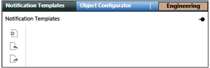
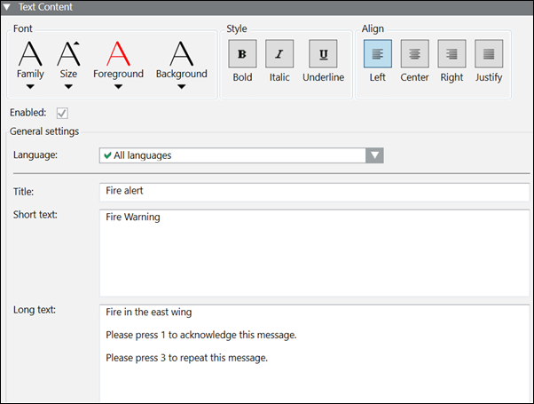

Notification Templates Tab
Notification Templates
Notification templates contain pre-configured content and control options so notifications can be sent out with little or no user interaction during an incident. Notification templates are used in the context of incident templates where they define, in combination with launch groups, which notifications should be sent out at which point in time throughout the course of a particular kind of incident. Message templates is a type of notification templates .
Notification templates are listed under Applications > Notification > Notification Templates.
The Notification Templates tab displays when you click Notification Templates in System Browser.

Notification Templates Toolbar | ||
Icon | Name | Description |
Create | Creates a new notification template (message template). The engineer can also create a Notification Templates folder to organize the notification templates. | |
| Import | Imports notification template Hierarchy. |
| Export | Exports notification template Hierarchy. |


Message templates in details as below,
Messages are a type of notification sent out to recipients during an incident. Messages are defined prior to the initiation of an incident and can have many forms of content, including text, audio, and other file contents. The content of a message typically consists of text and audio, but can contain other file content as well. The pre-configured details of messages are stored in message templates. These messages can be sent to the following recipients:
- Recipient users
- Recipient groups
Message Templates
A message template is a structure that contains pre-configured content and control options. Message templates can repeatedly be launched as messages. A message template allows for the configuration of the following details:
- Name and description of the message template
- Message type
- Priority of the message
- Recipients of the message
- Delivery mode options
- Acknowledgment
- Escalation
- Content of the message to be delivered (text, audio, and other file content)
- Variables (System, User, and Event)
Message Types describe the category of a message template.
Message Types are available by default after installation of the Notification application. They are customizable and are defined in the Library at Project > System Settings > Libraries > Notification (HQ) > Common > Texts > Text_Group_MNS_Mess_Types.
Message Priority is used to determine the order in which the messages are delivered by the system. For example, if two messages are scheduled to be launched at the same time, the lower priority message is delayed until the higher priority message is delivered.
Message Priorities are available by default after installation of the Notification application. They are defined in the Library Project > System Settings > Libraries > Notification (HQ) > Common > Texts > Text_Group_MNS_Mess_Priorities.
Message templates allow you to specify a Delivery Mode for recipient users:
- Send only to preferred device
- Send to devices in sequence upon failure
- (Available for Reno Plus license users) Send to all devices at once
- (Available for Reno Plus license users) Send to device in sequence on non-acknowledgment
When a message template has the Acknowledgment criterion selected, recipient users can provide read acknowledgments by manually replying to the messages received on recipient user devices. These messages contain device-specific instructions on how to reply in order to acknowledge the message.
For example, to acknowledge a message, recipient users can directly reply to SMS messages with a short reply ID (for example, Y) in the reply text or click a link in emails, or press the key using phone device.
Send to device in sequence on non-acknowledgment:
When the user selects this delivery mode option, the message is sent in the sequence to the recipient user devices on non-acknowledgment within the acknowledgment period. The acknowledgment period of message is applicable to the individual recipient user devices.

Acknowledgments and non-acknowledgments of recipient user devices are mentioned in the Notification report.
When a message template has the Escalation criterion enabled, additional notifications can be launched when escalation rules are met. Each message template can have one escalation rule. The escalation rules are defined based on either of the following options:
- Number of failed deliveries
All deliveries to system end devices and Recipient Users result in aDelivered,Failed,Excluded Removed, ,Not Started,UnknownandNot Resolvablestate. Notification counts the number of recipients inFailedstate. System end devices with the status ofNot Resolvableare considered asFailed. System end devices with the stateExcludedare not counted as recipients. - Number of received acknowledgments
Recipient users can reply to messages that have acknowledgments configured. Notification counts the number of acknowledgments received from recipient users.
An escalation rule further specifies either an absolute number or a percentage to which the chosen criteria is compared during delivery. Available operators are <, <=, >=, >. When the condition is met, a new notification is launched based on the notification template specified in the escalation configuration.
The system optionally supports the counting of anonymous acknowledgments during the evaluation of escalation rules. Anonymous acknowledgments are acknowledgment messages received by the system that can be mapped to a message but not to a specific recipient user. Anonymous acknowledgments can occur, for example, when a recipient user has emails forwarded to a different email account (email address unknown to Notification) and replies through that account.

NOTE:
When an Escalation rule is set to Acknowledged recipients, the Escalation does not occur after the expiry of the acknowledgment period of message.
Configuring escalation for a message template means associating the message template with a targeted notification template by means of the escalation rule. In order to maintain consistency and completeness amongst the notification templates within an incident template, the incident template Editor will in certain situations automatically add targeted notification templates to an incident template and place them in a specially designated Escalation launch group.
When a message has a defined expiration time, the message will expire at the defined time and will not be displayed on the recipient devices thereafter.
Text content in a message can contain variables. These variables are placeholders that allow for customization of a message template when it is being launched.
There are three types of variables that can be added to a message template:
- System variables
- Event variables
- User variables
System variables, such as launch time or launching user, are filled automatically when a message is launched and their values cannot be modified during the launch process. A list of system variables is available by default after installation of the Notification application. They are defined and provided by the system in the Library in Project > System Settings > Libraries > Notification (HQ) > Common > Texts > Text_Group_MNS_System_Variables.
Event variables are used in messages that are a part of automatically triggered incidents. Events are raised in the system, that in turn trigger the automatic initiation of incidents, based on the configuration of the underlying incident templates. The event variables define the information that must be extracted from the triggering events and what needs to be inserted into the text content of launched messages.
If the Incident is initiated manually, event variables displays as event variable plain text without any values.
If the Incident is launched through command, reaction, or macros, then the content displays as N/A.
These variables are available by default after installation of the Notification application. They are defined in the Library in System > Project > System Settings > Libraries > Notification (HQ) > Common > Texts > Text_Group_MNS_Event_Variables.
Event variables are filled automatically when a message is launched and they cannot be modified. The value for these event variables is fetched from events that are triggered because of certain trigger rules. For more information on automatic incident initiation using triggers, refer to the Event Triggers for Input Devices section.
User variables prompt you for values or other input when a message is launched. User variables are defined when a message template is created. For more information on creating user variables, refer to Configuring User Variables.
NOTE:
A message template must be assigned to a launch group of an incident before initiating an incident.
If a message is launched from the Related Items section after selecting a recipient, then the corresponding message falls under the category of ad hoc message.